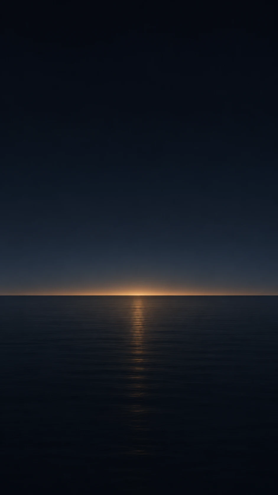

لا تيأسن وإن طـــــالت مطالبةٌإذا استعنتَ بصبرٍ أن ترى
فرجا
أخلق بذي الصبرِ أن يحظى بحاجتهِومدمـــــــنِ القرعِ للأبوابِ أن يلجا

لا تيأسن وإن طـــــالت مطالبةٌإذا استعنتَ بصبرٍ أن ترى
أخلق بذي الصبرِ أن يحظى بحاجتهِومدمـــــــنِ القرعِ للأبوابِ أن يلجا